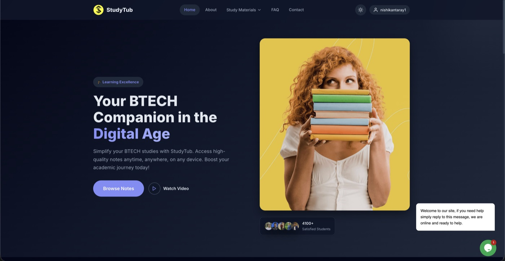

Selected work
Products I have built and shipped.
Analytics infrastructure, developer tools, and VS Code extensions — the things that made it out of the editor and in front of real users.

A modern web analytics platform built around actionable insights, complete data ownership, and zero compromise on privacy.
InsightTrack gives teams a real-time view of how users move through their product — from first pageview to conversion — without sending data to third parties. It runs a split-storage design: PostgreSQL absorbs every write on the tracking path, while a DuckDB column store answers the dashboard's analytical queries 10–100× faster than the same aggregations against Postgres. A sync pipeline keeps the two in step. Node.js + Express on the backend, React 18 + Vite on the front, with an MCP server that lets an AI analyst query your data in plain English.

A BTECH study companion that makes high-quality notes accessible to every student — anytime, on any device.
StudyTub centralises BTECH study materials in one clean, fast interface. Students can browse notes by subject, bookmark resources, and watch curated video walkthroughs — without hunting across drives and WhatsApp groups. Built with a React frontend deployed on Netlify, with a lightweight backend for auth and content management. Used by 6,000+ students to date, and still growing.
More projects
A lightweight VS Code extension that spins up a local development server with live reload — no config, no dependencies, just open and code. Installed 32,000+ times across the Open VSX registry and the VS Code Marketplace.
A VS Code extension delivering ready-to-use Bootstrap 5 component snippets — grids, cards, modals, navbars and more — directly in the editor. Installed 25,000+ times across the VS Code Marketplace and Open VSX.
A Spotify-Wrapped-style annual recap for your GitHub year — commits, streaks, top languages, and most-starred repos, all visualised in a shareable card. Rendered at the edge for instant load times.
Paste any npm package name and instantly see its bundle size, tree-shaking support, transitive dependency tree, and known vulnerabilities — all before you run npm install. Responses under 200ms.
Real-time fleet & delivery orchestration over WebSockets. Handles live driver tracking, route assignment, and status updates at 3× the throughput of the previous system — with 99.98% uptime in production.
A GPU-accelerated seasonal effects library for the web — snow, rain, leaves, and more. Zero dependencies, 6KB gzipped, and never drops a frame even on mid-range mobile devices.
A flexible iframe utility for the web — embed any URL with full control over sizing, sandboxing, and responsive behaviour. No wrapper boilerplate needed.
Also published on npm — generator-backdraft 2.5K total installs · seasonalfx 250+/mo · race-lock-js 200 total installs
More interesting projects on GitHub
The experiments, half-finished ideas, and hackathon builds that never got a landing page — 139 public repositories and counting.